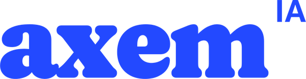

Un chantier zéro pour poser les fondations, deux pilotes pour démontrer la valeur, puis un déploiement progressif dans les métiers. À douze mois, vos référents pilotent seuls.
·Sommaire
Onze sections, un parcours linéaire : du besoin que vous nous avez confié jusqu'à la décision proposée à votre comité de direction.
01Ce qu'on a entendu
Julien, votre ambition est claire : faire entrer l'intelligence artificielle dans les métiers de Bellanger Construction, entreprise familiale de 170 salariés, sans perdre la maîtrise de vos données ni alourdir inutilement vos frais généraux. Les huit besoins remontés couvrent les études, les travaux, les conducteurs de travaux, la comptabilité, les méthodes et le commerce. Ils traduisent une volonté de simplifier le quotidien, de fiabiliser les processus et de mieux exploiter votre savoir-faire.
Votre première exigence est la sécurité : « que rien ne sorte, ou qu'on sache ce qui sort ». Des collaborateurs utilisent déjà des outils gratuits, notamment ChatGPT et Claude, sans cadre commun. Plutôt que de freiner cette dynamique, nous proposons de la sécuriser et de l'orienter vers des usages utiles, compatibles avec votre environnement Microsoft 365.
Votre direction doit pouvoir juger le projet sur des résultats concrets, et non sur des promesses technologiques. C'est pourquoi nous proposons un chantier zéro, suivi de preuves opérationnelles mesurables, avant chaque décision d'investissement.
02Ce qu'on propose
Une trajectoire comme un ouvrage : fondations, structure, second œuvre, réception. Chaque phase est validée par un jalon ; chaque suite est décidée avec vous.
03Phase 0 — Chantier zéro
Dix journées d'intervention réparties sur quatre semaines permettent de rencontrer les six métiers, d'observer les processus et les usages IA existants, et d'auditer les outils Microsoft 365 et logiciels métiers. Nous cartographions les données sensibles, les flux, les droits d'accès et les risques RGPD. Nous mesurons également les temps de traitement actuels pour disposer d'une référence fiable.
Aucun outil n'est retenu avant cette analyse.
04Phase 1 — Premières preuves
Deux cas d'usage choisis pour leur retour rapide, leur mesurabilité et leur effet d'entraînement sur le reste de l'organisation.
En visite, le conducteur dicte ses observations dans une interface professionnelle autorisée. La transcription alimente un modèle de compte rendu : avancement, réserves, décisions, actions, responsables et échéances. Un document Word est produit puis relu et validé avant diffusion.
Les factures reçues sont extraites par OCR et traitement documentaire, rapprochées des référentiels fournisseurs et commandes, puis enrichies d'une proposition d'imputation analytique. Le comptable contrôle et valide ; aucune écriture ni aucun paiement n'est déclenché sans autorisation.
05Phase 2 — Déploiement progressif
Les études en premier, conformément à la priorité exprimée par Julien. Puis les appels d'offres s'appuient sur les référentiels constitués. Les mails offrent une mise en œuvre plus courte. Méthodes et veille avancent en parallèle sur deux équipes distinctes.
| Période | Cas d'usage | Complexité |
|---|---|---|
| M4–M5 8 sem. |
Études — assistance aux métrés sur un périmètre test, bibliothèque de prix, prédevis et comparaison des devis sous-traitants. Contrôle par le métreur. | Élevée |
| M6–M7 8 sem. |
Appels d'offres — analyse des DCE, mémoires techniques modernisés et bibliothèque de références validées. | Moyenne à élevée |
| M8 4 sem. |
Mails — synthèse, tri et brouillons dans Microsoft 365, sans envoi automatique. | Faible à moyenne |
| M9 4 sem. |
Méthodes — brouillons de modes opératoires et assistance aux plans de rotation ; validation sécurité et métier obligatoire. | Élevée |
| M9 4 sem. |
Veille — qualification des opportunités publiques et privées, sources autorisées et alertes. | Moyenne |
Comptabilité : industrialisation progressive conditionnée à la qualité du pilote ; formation et suivi des usages dans tous les métiers.
06Phase 3 — Autonomie
Nous transférons progressivement le pilotage au groupe de travail de Julien : référents formés par métier, procédures d'exploitation, prompts, configurations, documentation, droits d'administration et modalités de réversibilité. Une recette finale vérifie que les équipes savent utiliser, contrôler et maintenir les workflows dans le périmètre convenu.
Après réception, AXEM reste disponible via un abonnement facultatif de 1 500 € HT/mois : une journée mensuelle incluant comité de pilotage, suivi des usages et assistance dans le périmètre contractuel. Les évolutions majeures sont chiffrées séparément.
Notre objectif : vous rappeler pour les évolutions, pas pour le fonctionnement quotidien.
07Sécurité et souveraineté
La sécurité constitue un préalable à chaque mise en production. Nous privilégions un hébergement et un traitement en France lorsque les offres et les flux le permettent.
France par défaut. À défaut, localisations et sous-traitants documentés et soumis à validation.
Vérification contractuelle de l'absence d'entraînement sur vos données.
Usages gratuits encadrés, formation obligatoire des utilisateurs avant accès.
Logs proportionnés et protégés, cartographie des données revue chaque trimestre.
Les décisions financières, techniques et de sécurité restent humaines, sans exception.
Aucun éditeur ni aucune localisation ne sont garantis avant vérification.
08Tarification
Engagement ferme initial : 10 000 € HT. Les phases suivantes sont autorisées aux jalons. Les 57 jours représentent une hypothèse de charge à 1 000 €/jour, à confirmer après audit.
| Phase | Charge indicative | Montant HT |
|---|---|---|
| Chantier zéro | 10 jours | 10 000 € |
| Premières preuves | 20 jours | 20 000 € |
| Déploiement progressif | 18 jours · 3 j/mois × 6 | 18 000 € |
| Autonomie | 9 jours · 3 j/mois × 3 | 9 000 € |
| Total prévisionnel | 57 jours | 57 000 € |
| Scénario | Hypothèse annuelle HT |
|---|---|
| Prudent · montée progressive | 10 000 € |
| Central | 18 000 € |
| Haut | 20 000 € |
09Retour sur investissement
Les gains ci-dessous représentent la valeur du temps libéré en régime de croisière, non une économie de trésorerie garantie. Faites varier les curseurs pour tester vos propres hypothèses.
Phase 1 à plein régime — hypothèses modifiables
Les volumes de factures proviennent du compte rendu de l'appel de découverte ; le nombre de chantiers, les temps gagnés et les coûts horaires sont des hypothèses à valider lors du chantier zéro. Les autres métiers déployés en Phase 2 constituent un potentiel additionnel à mesurer, sans double comptage. Le délai de retour sera recalculé à chaque jalon sur les gains réellement observés, les coûts récurrents et le taux d'adoption.
10Pourquoi AXEM
L'offre de treize journées à 1 000 € constitue une première réponse possible à votre besoin d'accompagnement. Vous nous avez toutefois indiqué qu'elle vous semblait généraliste. Notre proposition répond à une ambition différente : transformer les usages de Bellanger sur douze mois, avec des solutions testées dans vos processus et des résultats que votre direction peut vérifier.
Dix jours dans vos métiers avant de choisir les outils.
Avant toute mise en production, sans exception.
Déploiements conditionnés à leur réussite.
Aux référents internes, pour votre autonomie.
Nous ne vous demandons pas de financer tout le programme dès le départ : le chantier zéro est le premier engagement, et chaque suite est décidée avec vous. Comparez les offres sur leurs livrables, leurs périmètres et leurs critères de réception, plutôt que sur le seul prix journalier.
11Prochaines étapes
Autoriser le chantier zéro à 10 000 € HT, désigner Julien comme sponsor opérationnel et nommer un référent par métier. Les engagements ultérieurs restent soumis aux résultats et au cadrage.